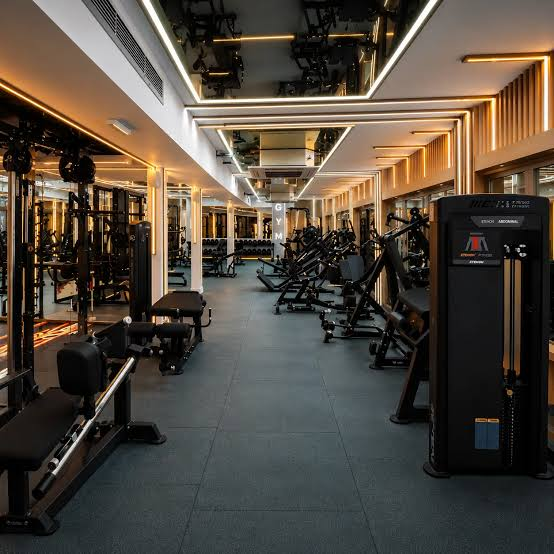
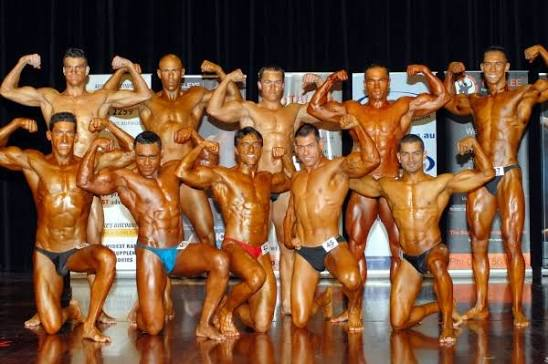
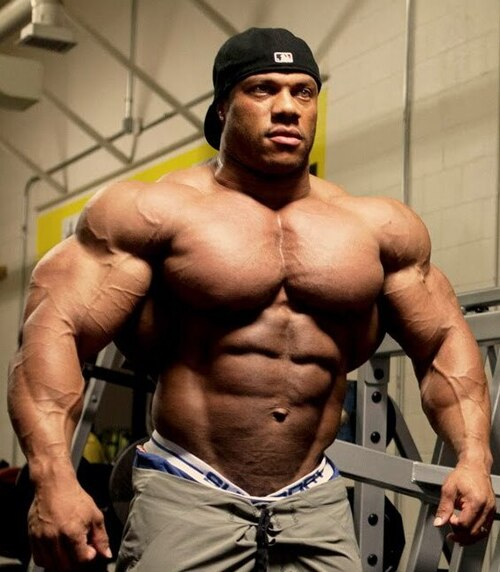
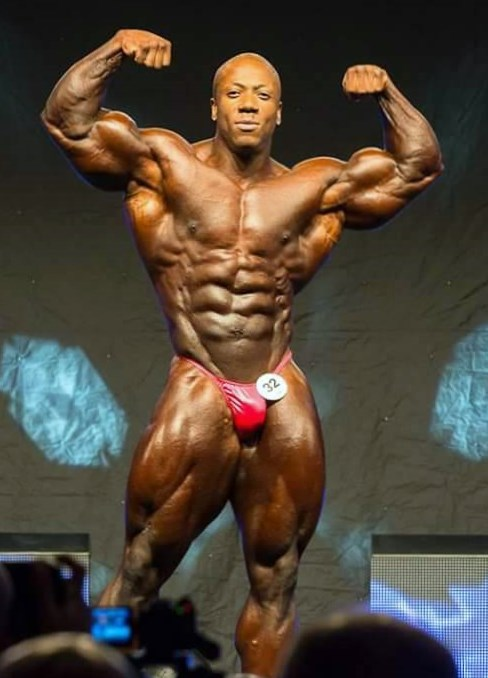
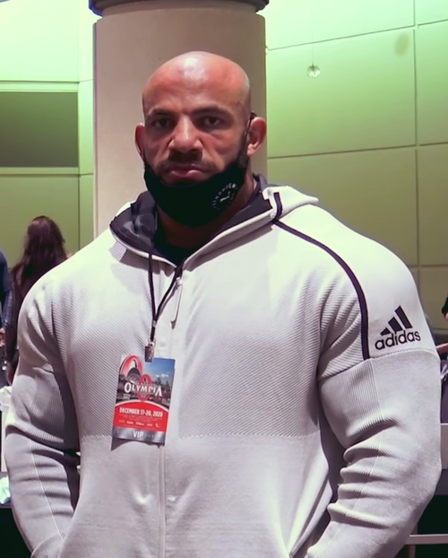
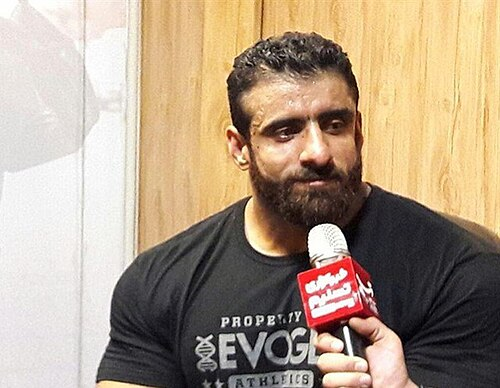
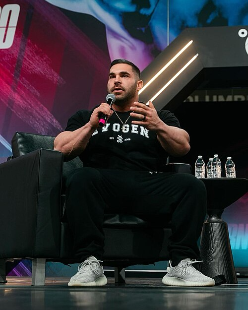

INSTALACION DE ENTRENAMIENTO INTENSIVO

No es una franquicia. No es una cadena. Es el lugar donde todo comenzó y donde sigue ocurriendo a diario.

Todo el mundo quiere ser culturista, pero nadie quiere levantar pesas pesadas.
— Ronnie Coleman





El Arnold Split es una rutina de entrenamiento de culturismo de alto volumen y alta frecuencia (5 días a la semana), diseñada e inmortalizada por el legendario culturista Arnold Schwarzenegger.